library(ggplot2)
library(gridExtra)R - ggplot2
This tutorial will give an introduction to plotting with the ggplot2 package. Getting a basic familiarity with ggplot2 will really save you a lot of time.
This is oriented to those with little or no experience using ggplot2 or those who have tried it and gotten frustrated. The goal is to get you started. Once you have the basics, there are a so many ggplot tutorials online – though personally the basics are all I need.
Important
If this content feels hard, remember that ChatGPT knows ggplot2. Just ask it to help you! Describe what you are trying to do.
“I have an excel file with a column called temp and a column called size. I want to read this into R and plot temp versus size using ggplot. I want red points that are shaped like triangles. The x label is temperature and the y label is size in mm. Show me only the code.”
Basic x versus y plot
Workflow
Let’s say you wanted to make a simple xy plot with plot(). Here’s your workflow.
- Decide on
xor use the default (1 to the number of data points). - Decide on
y. - Plot with
plot(x,y)
val <- mtcars$mpg
x <- mtcars$hp
plot(x, val, type="p")
Here’s your ggplot() workflow.
- Decide on
xor use the default (1 to the number of data points). - Decide on
y. - Make a data frame with
xandy. - Create the plot object with a call to
ggplot()to tell it the data frame and then what thexandyto use:aes(x=..., y=...). - Add points or lines to the plot with
geom_line()orgeom_point().
df <- data.frame(x=mtcars$hp, val=mtcars$mpg)
p1 <- ggplot(df, aes(x=x, y=val)) + # set up
geom_point() # plot a line
p1 # plot it
Typically you’d just write the call like so
ggplot(df, aes(x=x, y=val)) + geom_point()p1 is a ggplot object.
class(p1)[1] "gg" "ggplot"We can add elements to a ggplot object
p1 + geom_line()
Modifying your plot
There are two different workflows that you need to decide on.
- Dynamic colors etc: Let
ggplot()pick your colors, points, line widths etc. - Fixed colors etc: Manually choose your colors, points, line widths etc, aka use a fixed value.
Gravitating to option 1 will make your life with ggplot() easier, but let’s start with option 2.
Important
Fixed lines, points attributes go outside of aes() in a geom_...() call. Dynamic attributes go inside of aes().
Look at ?geom_point to see the attributes that you can pass in.
ggplot(df, aes(x=x, y=val)) + geom_point(col="blue")
The length of the fixed attribute must be 1 or the length of the data.
ggplot(df, aes(x=x, y=val)) +
geom_point(shape=21, col="blue", fill=mtcars$carb, size=6, alpha=.5, stroke=2)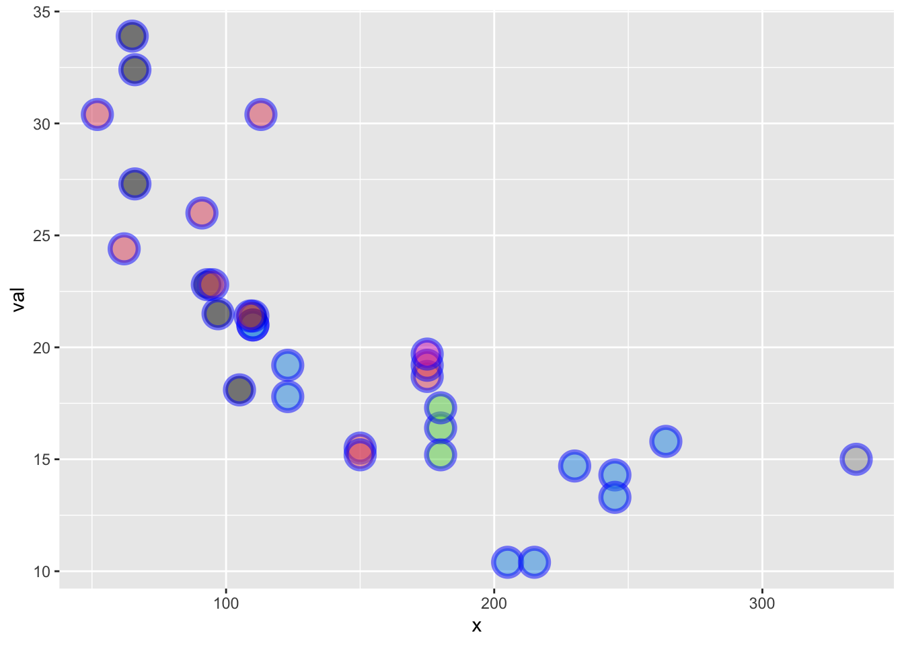
Ways to set attributes that won’t work as you think:
Putting color outside of aes() in ggplot() does nothing. ggplot() sets up the data to use, but information outside aes() doesn’t flow to the plotting functions like geom_point().
ggplot(df, aes(x=x, y=val), col="blue") + geom_point()
Putting color inside of aes() in ggplot() has a non-intuitive effect. Plot attributes, like color, in aes() are converted to factors and the colors (etc) will be chosen dynamically. The name “blue” is not a color is the a factor and ggplot() gives the first factor the color red in this case. Information in aes() will flow to the rest of the plot unless you tell the geom_point() otherwise).
ggplot(df, aes(x=x, y=val, color="blue")) + geom_point()
How do we tell geom_point() not to use the color value in aes() in ggplot()? Tell it to use a fixed value by putting col="blue" outside of an aes() call in geom_point().
ggplot(df, aes(x=x, y=val)) + geom_point(col="blue")
What happens if we put the color in aes() in geom_point()?
ggplot(df, aes(x=x, y=val)) + geom_point(aes(color="blue"))
Let’s make a plot with big red points and a thick blue line.
p1 <- ggplot(df, aes(x=x, y=val)) +
geom_line(col="blue", size=2) +
geom_point(col="red", size=3)Warning: Using `size` aesthetic for lines was deprecated in ggplot2 3.4.0.
ℹ Please use `linewidth` instead.p1
Let’s add a column plot to that. I pass in alpha to add some transparency to the columns so they don’t wipe out the line.
p1 + geom_col(alpha=0.5, position="dodge")
Labels and limits
With ggplot, use xlab() ylab() and xlim() ylim(). Ignore the NA warning. I’ll show how to stop that later.
ggplot(df, aes(x=x, y=val)) +
geom_point() +
xlab("time") + ylab("value") +
ggtitle("ggplot plot") +
xlim(c(100,200)) + ylim(c(0,40))Warning: Removed 16 rows containing missing values (`geom_point()`).
Changing the whole look
ggplot uses themes to set the look of your plot and you can change the whole look by setting a different theme. You can also just tweak one element of the plot’s existing theme. Note because we fixed the line and point colors, we override some theme elements (eg, line colors). See ?theme_bw to see all the themes. See ?theme to learn how to change one element of your plot design.
p1 + theme_classic()
Adding lines or points
Let’s say you want to plot 2 lines.
Workflow
In ggplot() you have two possible workflows.
Option 1. This workflow is kind of bad but often easier for beginners.
- Make a data frame for each line:
dfanddf2. - Call
geom_line()withdata=dfordata=dfand aaes()
df <- data.frame(x=mtcars$hp, val=mtcars$mpg)
df2 <- data.frame(x=df$x, val2=df$val+10)
ggplot() +
geom_point(data=df, aes(x=x, y=val)) +
geom_line(data=df2, aes(x=x, y=val2))
One issue with aes() and data is that it is inherited rightward. This inheriting feature is usually very handy, but when working with multiple data frames, it is often clearer if you keep the data and aes() with the points and lines.
Here is another example of plotting data from two different data frames:
ggplot() +
geom_line(data=iris, aes(x = Sepal.Length, y=Petal.Length)) +
geom_bar(data=mtcars, aes(x=cyl), alpha=0.3) +
ylab("y") + xlab("x")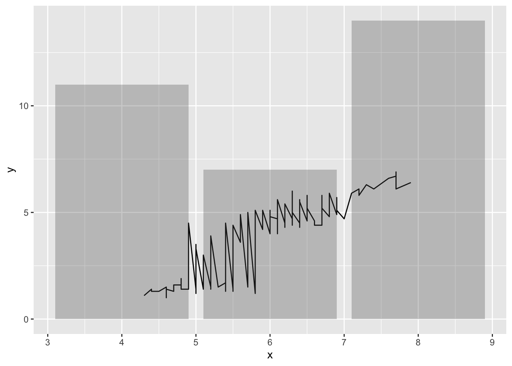
Adding a legend
ggplot makes it rather hard to modify your legend if you create a plot this way. Creating a manual legend, as opposed to dynamically as ggplot is supposed to work, can be quite hard. First thing to know is that the color, linestyle, and/or shape must be in aes() to appear in the legend. If it’s not there you can’t control it in the legend.
Note: What I am about to show is really hacky and not the way ggplot is intended to be used, but it comes up so often for new ggplot users that I want you to see a solution so you don’t give up on ggplot because of legends. Jump ahead to the correct ggplot workflow with long-form data frames to see how to avoid this.
This works. Ignore the warning about unknown aesthetics.
ggplot() +
geom_point(data=df, aes(x=x, y=val, col="df", linetype="df")) +
geom_line(data=df2, aes(x=x, y=val2, col="df2", linetype="df2")) +
scale_color_manual("name", values=c("blue", "black")) +
scale_linetype_manual("name",values=c(0,1))Warning in geom_point(data = df, aes(x = x, y = val, col = "df", linetype =
"df")): Ignoring unknown aesthetics: linetype
Correct ggplot workflow
This is how ggplot() is intended to be used: one long data frame.
- Make data frames with
dfanddf2data and a “name” column. - Set up the plot with
ggplot() - Make points or line different using the “name” column
df1 <- data.frame(x=x, val=val, name="df1")
df2 <- data.frame(x=x, val=val+10, name="df2")
df3 <- rbind(df1, df2)
ggplot(df3, aes(x=x, y=val, col=name, shape=name)) +
geom_line() +
geom_point()
- If the color, shape, linetype is not in an
aes()it won’t appear in the legend. - If the color, shape, or linetype is in an
aes()it will appear in the legend. aes()info inggplot()flows to the other elements. Put theaes()info in the individualgeom_...()calls if you don’t want that. Useinherit.aes=FALSEto stop this inheriting behavior.- Want to mix points and lines? You need to use
scale_..._manual()to manually turn-off points or lines for some of the data. - You can always force colors, shapes, linetypes by passing in color, shape, size etc outside of
aes()but it won’t appear in the legend. Only colors, shapes, etc, that appear inaes()will appear in a legend.
Example, points are all black since the aes(col=name) only appears in the geom_line() call.
ggplot(df3, aes(x=x, y=val)) +
geom_line(aes(col=name)) +
geom_point(aes(shape=name))
Modifying the legend
You can control all aspects of the legend. Read up on it here.
Manually changing data points and other lines will require scale_...() and gets hacky.
ggplot(df3, aes(x=x, y=val)) +
geom_line(aes(col=name, linetype=name)) +
geom_point(aes(shape=name)) +
scale_color_manual("name", values=c("blue", "black")) +
scale_shape_manual("name",values=c(NA,1)) +
scale_linetype_manual("name",values=c(1,0))Warning: Removed 32 rows containing missing values (`geom_point()`).
NA warnings
Ack all those NA warnings!
df4 <- data.frame(x=1:10, y=c(1,NA,NA,4:10), name=rep(c("a","b"),5))
ggplot(df4, aes(x=x, y=y, col=name)) +
geom_point()Warning: Removed 2 rows containing missing values (`geom_point()`).
Get rid of them using na.rm=TRUE.
ggplot(df4, aes(x=x, y=y, col=name)) +
geom_point(na.rm=TRUE)
Making a boxplot
Let’s look at the mpg data frame.
mpg# A tibble: 234 × 11
manufacturer model displ year cyl trans drv cty hwy fl class
<chr> <chr> <dbl> <int> <int> <chr> <chr> <int> <int> <chr> <chr>
1 audi a4 1.8 1999 4 auto… f 18 29 p comp…
2 audi a4 1.8 1999 4 manu… f 21 29 p comp…
3 audi a4 2 2008 4 manu… f 20 31 p comp…
4 audi a4 2 2008 4 auto… f 21 30 p comp…
5 audi a4 2.8 1999 6 auto… f 16 26 p comp…
6 audi a4 2.8 1999 6 manu… f 18 26 p comp…
7 audi a4 3.1 2008 6 auto… f 18 27 p comp…
8 audi a4 quattro 1.8 1999 4 manu… 4 18 26 p comp…
9 audi a4 quattro 1.8 1999 4 auto… 4 16 25 p comp…
10 audi a4 quattro 2 2008 4 manu… 4 20 28 p comp…
# ℹ 224 more rowsggplot(mpg, aes(x=drv, y=hwy)) +
geom_boxplot()
ggplot(mpg, aes(x=drv, y=hwy)) +
geom_boxplot() +
facet_wrap(~class) +
xlab("") + ylab("mpg") +
ggtitle("highway miles per gallon by class")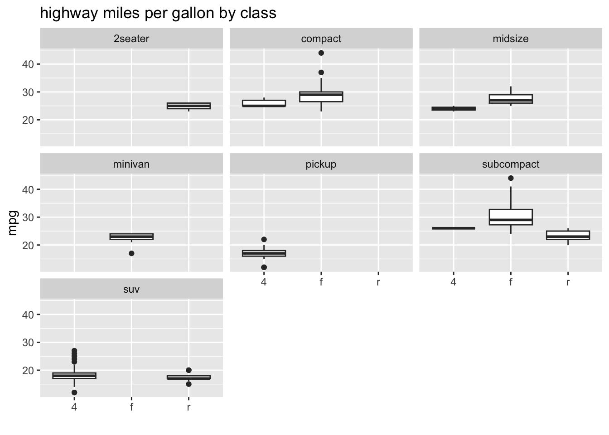
Arranging plots into grids
Dynamically
ggplot() will also dynamically break your data into plots for you.
df1 <- data.frame(t=1:10, val=10:1, name="df1")
df2 <- data.frame(t=1:20, val=1:20+1, name="df2")
df <- rbind(df1, df2)
p1 <- ggplot(df, aes(x=t, y=val, col=name)) + geom_line()
p1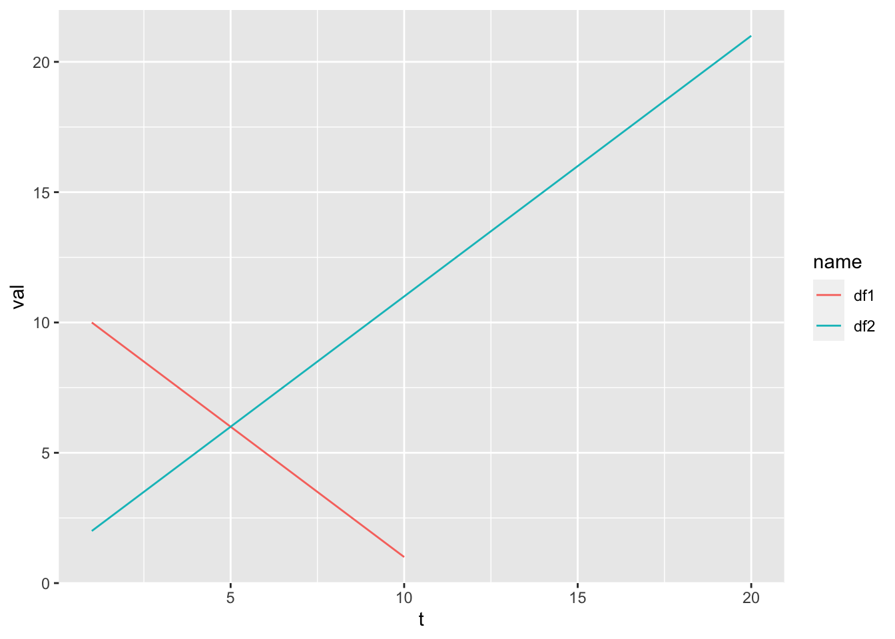
p1 + facet_wrap(~name)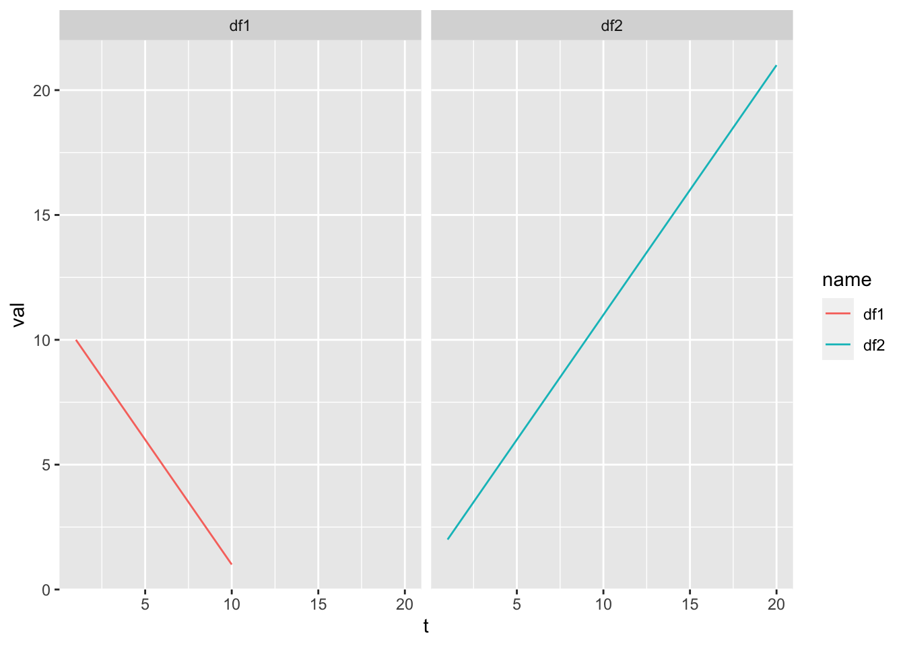
head(mpg)# A tibble: 6 × 11
manufacturer model displ year cyl trans drv cty hwy fl class
<chr> <chr> <dbl> <int> <int> <chr> <chr> <int> <int> <chr> <chr>
1 audi a4 1.8 1999 4 auto(l5) f 18 29 p compa…
2 audi a4 1.8 1999 4 manual(m5) f 21 29 p compa…
3 audi a4 2 2008 4 manual(m6) f 20 31 p compa…
4 audi a4 2 2008 4 auto(av) f 21 30 p compa…
5 audi a4 2.8 1999 6 auto(l5) f 16 26 p compa…
6 audi a4 2.8 1999 6 manual(m5) f 18 26 p compa…Let’s plot city mpg versus number of cylinders.
pc <- ggplot(mpg, aes(x=cyl, y=cty)) + geom_point()
pc
Now we can divide this up by different factors in our the mpg data frame.
pc + facet_wrap(~class)
We can add some things to our plot and free the scales.
pc + facet_wrap(~class, scales="free") + geom_smooth(method="lm")`geom_smooth()` using formula = 'y ~ x'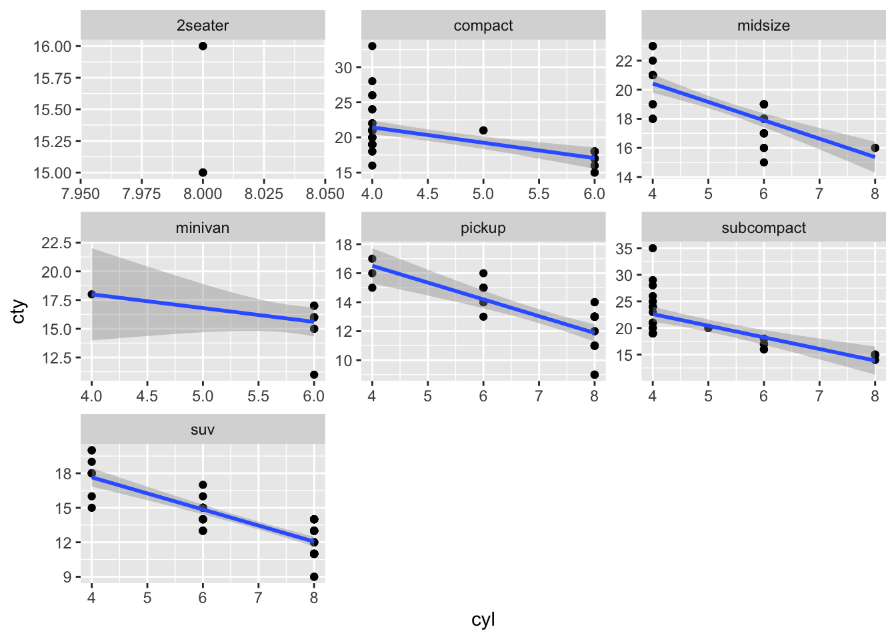
Manually
Now let’s do this in with ggplot() in a similar workflow. The difference with ggplot() is that we save the plots and then arrange them into a grid with gridExtra::grid.arrange() (from the gridExtra package).
library(gridExtra)
df <- data.frame(t = 1:10, val = rnorm(10))
p1 <- ggplot(df, aes(x=t, y=val)) + geom_line() + geom_point()
p2 <- ggplot(df, aes(x=t, y=val+100)) + geom_line()
p3 <- ggplot(df, aes(x=t, y=100*val)) + geom_point()
df2 <- data.frame(t = 1:4, val = 1:4, se=.1*(1:4))
p4 <- ggplot(df2, aes(x=t, y=val)) + geom_col()
gridExtra::grid.arrange(p1, p2, p3, p4)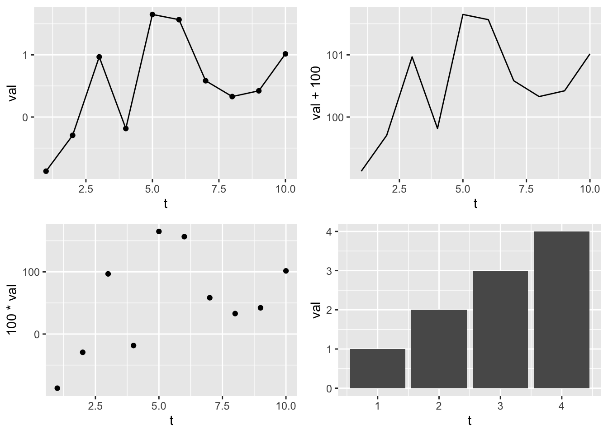
Instead of gridExtra and grid.arrange(), check out the patchwork package. It does similar jobs as grid.arrange() but is better.
Let’s do two plots in one column but add new info to plot 1.
gridExtra::grid.arrange(p1+geom_smooth(method="lm"),
p4+geom_errorbar(aes(ymin=val-se, ymax=val+se), width=0.3), ncol=1)`geom_smooth()` using formula = 'y ~ x'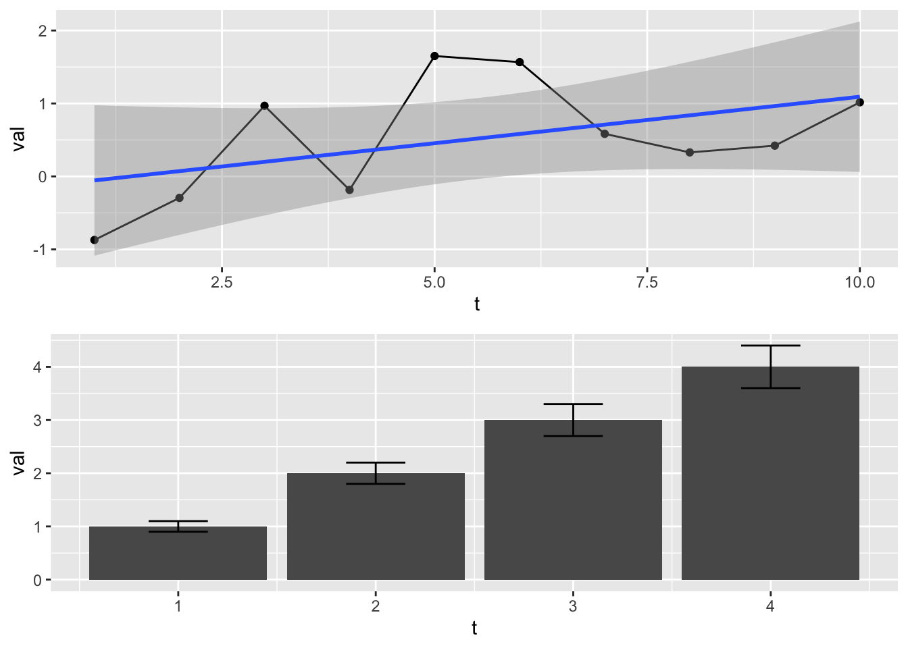
When you don’t know how many plots you’ll be arranging. You can assemble ggplot objects into a list and pass that to grid.arrange().
df <- data.frame(t = 1:10, val = rnorm(10))
plist <- list()
n <- 3
for(i in 1:n) plist[[i]] <- ggplot(df, aes(x=t, y=val)) + geom_line() + geom_point()
df2 <- data.frame(t = 1:4, val = 1:4, se=.1*(1:4))
plist[[n+1]] <- ggplot(df2, aes(x=t, y=val)) + geom_col()
gridExtra::grid.arrange(grobs=plist)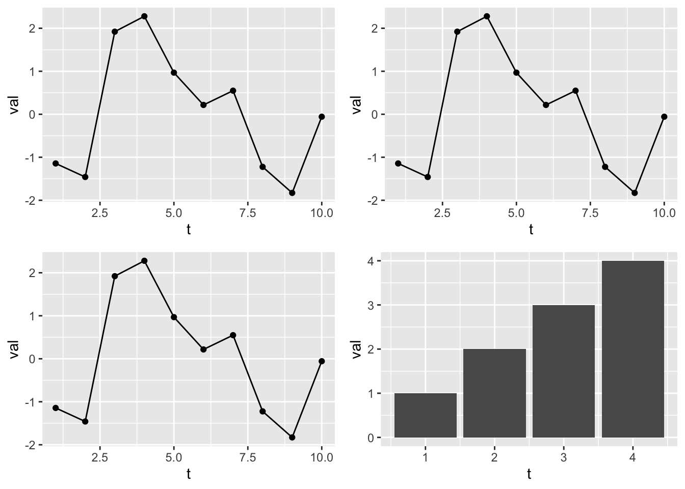
The patchwork package gives you the same functionality.
patchwork::wrap_plots(plist)We can combine these facet wrapped figures into a grid because they are ggplot objects. Making this plot in base R would take you forever and another 2 forevers if you wanted to change it around or if the number of classes in your data changed.
pf <- pc + facet_wrap(~class)
grid.arrange( p1, pf, ncol=2)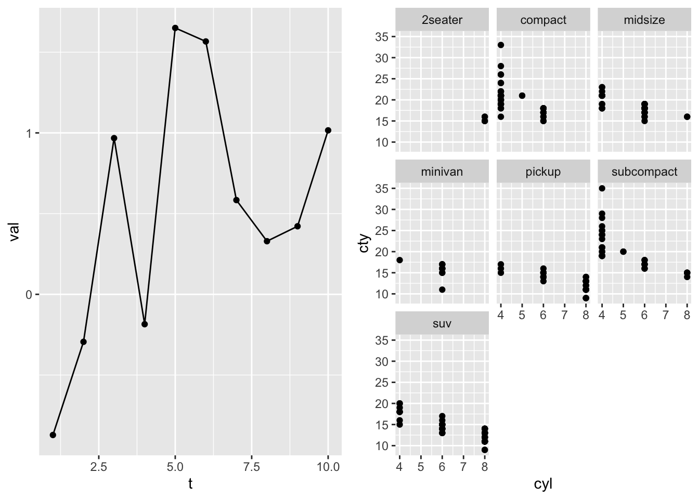
Notes
facet_wrap()often balks if you use different data frames in your plot construction, i.e. you doing something kind of hacky.- needs a column in your data frame factors (or characters it can coerce into factors). Might work with multiple data frames in your plot as long as each data frame has the same “name” column.
- wants all the data frame to be the same length. This is only when you use different data frames. Fine if you have all data in one data frame.
Creating plot templates
If you are creating plots with the same features over and over, you can hold the features in a list and add that on to your plot.
Example where I want all my plots to have red points and a regression line:
p3 <- geom_point(col="red")
p2 <- geom_smooth(method="lm")
p4 <- xlab("MPG")
p5 <- ylab("HP")
# pt is my template
pt <- list(p2, p3, p4, p5)
p1 <- ggplot(mtcars, aes(x=mpg, y=hp)) + pt
p2 <- ggplot(mpg, aes(x=hwy,y=cyl)) + pt
grid.arrange(p1, p2)`geom_smooth()` using formula = 'y ~ x'
`geom_smooth()` using formula = 'y ~ x'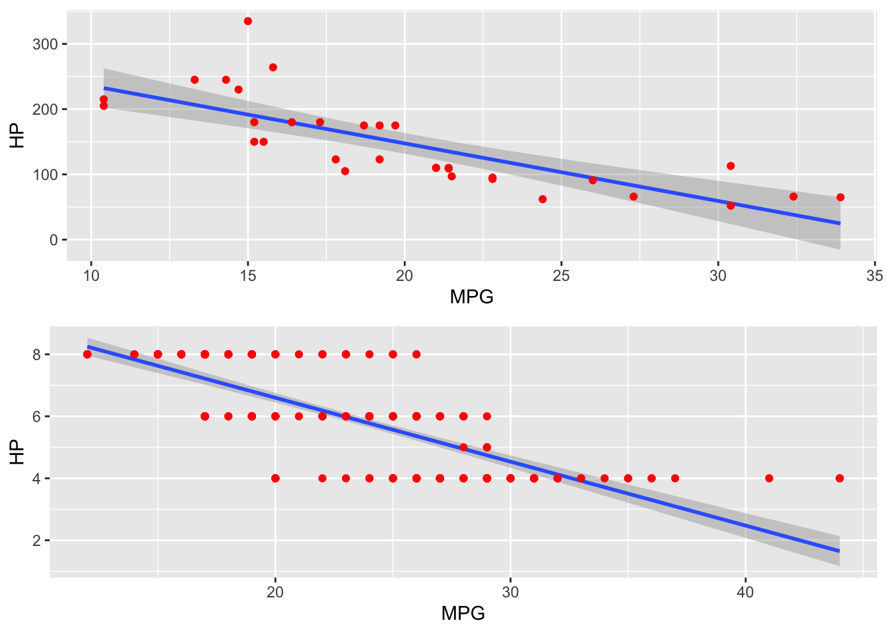
Summary
ggplot is very powerful and will make your plotting workflow more efficient and much much faster. It takes a little while to get the hang of, but you do not need to be a ggplot wizard. Just the basics here will take you a long way. ChatGPT knows ggplot2 and will help you.
A good set of basic ggplot commands when you are starting:
ggplotgeom_line()geom_point()geom_col()ggtitle(),xlab(),ylab(),xlim(),ylim()- Themes. Use
?theme_bwto see them. gridExtra::grid.arrange(..., nrow, ncol)facet_wrap()- Changing the color, line, and points manually is a bit painful, but often unavoidable. Get to know the
scale_xyz_manual()functions when you need to do that.?scale_color_manualto find them all.
If you want to see some examples of what ggplot2 can do. look at some galleries:
- https://r-graph-gallery.com/ggplot2-package.html
- http://r-statistics.co/Top50-Ggplot2-Visualizations-MasterList-R-Code.html